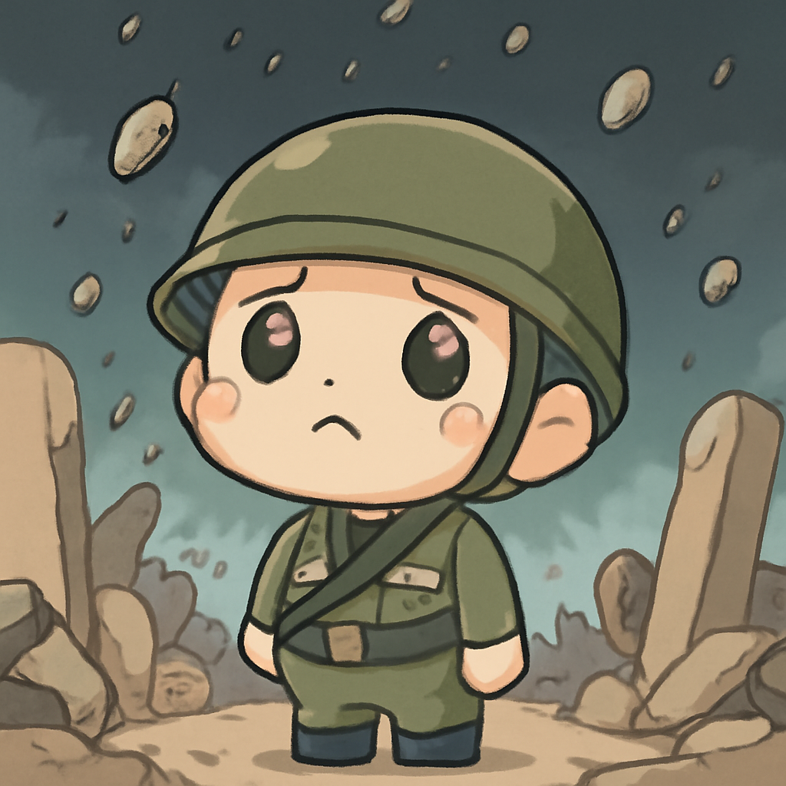

其一 · 烏克蘭基輔 · 俄軍對烏克蘭城市發動導彈攻擊
基輔遭俄軍導彈襲擊，造成多人死傷

在烏克蘭基輔，俄軍於近日發動了一次大規模的導彈攻擊，造成八人死亡、數十人受傷。這一事件再次加劇了烏克蘭與俄羅斯之間的緊張局勢，顯示出戰爭的殘酷與無情。面對這樣的攻擊，烏克蘭的抵抗力仍然強勁，未來局勢仍然難以預測。
🔗 原始新聞 ↗
2026-07-20 · 以古觀今，以笑抗愁
基輔遭俄軍導彈襲擊，造成多人死傷

在烏克蘭基輔，俄軍於近日發動了一次大規模的導彈攻擊，造成八人死亡、數十人受傷。這一事件再次加劇了烏克蘭與俄羅斯之間的緊張局勢，顯示出戰爭的殘酷與無情。面對這樣的攻擊，烏克蘭的抵抗力仍然強勁，未來局勢仍然難以預測。
🔗 原始新聞 ↗
伊朗攻擊造成美國士兵再添傷亡
在伊朗的攻擊下，美國軍方報告稱又有一名士兵在伊拉克遭殺害，這是一天內的第二次死亡事件。美軍的安全形勢日益嚴峻，這可能會引發更大的地緣政治緊張局勢。我們可能要開始考慮士兵們的安全問題了，而不是只關心他們的裝備是否閃亮！
🔗 原始新聞 ↗
圖瓦盧因海平面上升，面臨滅國危機
太平洋的圖瓦盧國正面臨海平面上升的威脅，這個可愛的小島國可能會在不久的將來消失在海中。這一問題不僅影響當地居民的生活，也讓全球對氣候變遷的關注升溫。或許是時候考慮給這些島嶼一個'浮動城鎮'的概念了！
🔗 原始新聞 ↗
古巴異議人士在五年監禁後逃亡美國
古巴的異議人士路易斯·曼努埃爾·奧特羅·阿爾坎塔拉在經歷了五年的監禁後，最終選擇流亡美國。他曾在古巴最大規模的抗議活動中扮演重要角色，此次流亡將引發國際社會的關注與討論。希望他在新生活中能找到更多的自由與希望。
🔗 原始新聞 ↗
蓋亞那渡輪沉沒，67人獲救，仍有多人失蹤
在蓋亞那海岸，一艘載有133名乘客的渡輪不幸沉沒，當地官員表示已成功救起67人，但仍有許多人下落不明。這起事故不僅讓人心痛，也讓人再次提醒我們水上交通的安全問題。希望所有失踪者都能早日被找到，重聚家庭。
🔗 原始新聞 ↗